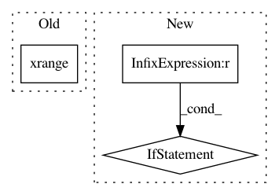

b171c97f2974ef3f884ad9674de137eda7023875,functions/LinearSpectralUnmixing.py,LinearSpectralUnmixing,updateRasterInfo,#LinearSpectralUnmixing#,55
Before Change
// rough estimation of output stats
outStats = {"minimum": -10.0, "maximum": 10.0, "skipFactorX": 10, "skipFactorY": 10}
// repeat stats for all output raster bands
outStats = tuple(outStats for i in xrange(bandCount))
kwargs["output_info"]["bandCount"] = bandCount
kwargs["output_info"]["statistics"] = outStats
After Change
kwargs["raster_info"]["bandCount"], self.coefficients.shape[0]))
// determine output pixel value method
self.applyScaling = kwargs["method"].lower() == "scaled"
outStats = {
"minimum": 0. if self.applyScaling else -10.,
"maximum": 1. if self.applyScaling else 10.,
"skipFactorX": 10,
"skipFactorY": 10
}
In pattern: SUPERPATTERN
Frequency: 3
Non-data size: 3
Instances
Project Name: Esri/raster-functions
Commit Name: b171c97f2974ef3f884ad9674de137eda7023875
Time: 2015-03-01
Author: akferoz@esri.com
File Name: functions/LinearSpectralUnmixing.py
Class Name: LinearSpectralUnmixing
Method Name: updateRasterInfo
Project Name: bulik/ldsc
Commit Name: 8b9b58c9bca513856be4e0741a4d378176451243
Time: 2014-05-20
Author: hilaryfinucane@gmail.com
File Name: ldsc/jackknife.py
Class Name: LstsqJackknife
Method Name: __compute_block_vals__
Project Name: UFAL-DSG/tgen
Commit Name: ec01f586b20cc3e9e15146e71d9248301ba277ae
Time: 2014-07-02
Author: odusek@ufal.mff.cuni.cz
File Name: tgen/rank.py
Class Name: PerceptronRanker
Method Name: _get_rival_candidates